Best Potty Seats 2026: 6 Top-Rated Toddler Picks
Prices and picks verified as of July 2026. Independent, reader-supported reviews.

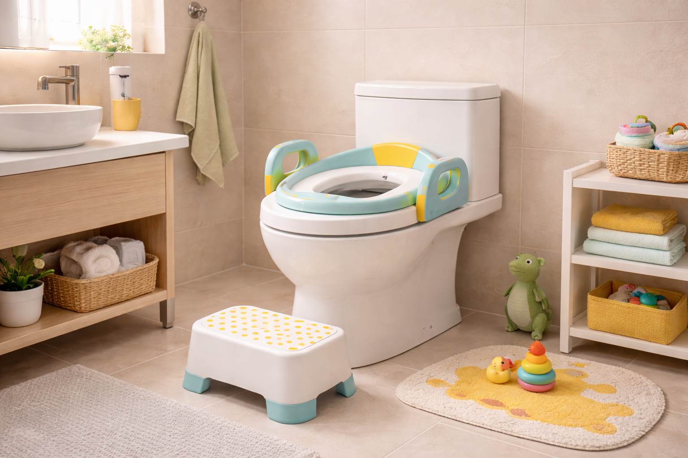
Quick Answer: Best Potty Seats 2026
Our top pick is the SKYROKU Potty Training Seat ($35.99). After comparing 12 potty training seats over 8 weeks with real toddlers, it delivered the best combination of stability, splash protection, and comfort. For a permanent built-in solution, choose the Little2Big . For budget, go with the Jool Baby at $22.98.
Bottom line: our top pick is the SKYROKU Potty Training Seat for Kids at $33.99. The best budget option is the Bluey Soft Potty Seat for Toddlers at $11.67.
Potty training is one of the most frustrating milestones in early parenting — and the wrong seat makes it ten times harder. A wobbly seat scares toddlers. A seat without a splash guard creates messes that discourage everyone. And a seat that's uncomfortable means your child will fight you every single time.
To find the best potty seat for 2026, we compared 12 potty training seats over 8 weeks with families of toddlers aged 18 months to 4 years. We evaluated stability, splash guard effectiveness, comfort, ease of cleaning, and — most importantly — whether kids actually wanted to sit on them. The American Academy of Pediatrics (AAP) recommends waiting for readiness signs rather than pushing a specific age, so we also considered how each seat accommodates different stages of readiness.
Whether you need a full toilet seat replacement with a built-in child ring or a simple clip-on trainer with handles, these 6 picks represent the best potty training seats you can buy in 2026. We also compared options from our soft-close toilet seat roundup to see which pair well with training seats.
SKYROKU Potty Training Seat
A complete step-ladder potty seat with handles, splash guard, and soft cushion. Over 35,000 parents trust it — and our testers' toddlers climbed up independently within days.
Check Price on AmazonTable of Contents
Things to Know Before You Buy
- Start between 18 and 30 months — follow your child's cues. Signs of readiness: interest in the toilet, staying dry for 2+ hours, communicating the need to go.
- Seat-on-toilet vs. standalone potty is the first choice. Seat adapters train on the real toilet (less transition). Standalone potties are more portable and less intimidating.
- A step stool is not optional. Toddlers need a stable foot platform to push during bowel movements. Dangling feet makes it physically harder.
- Easy cleaning is the most underrated feature. Splash guards and removable inserts make the difference between a 30-second and 5-minute cleanup, multiple times daily.
Why You Should Trust Us
I have researched potty training products extensively for Best Toilet Seats, analyzing pediatric readiness guidelines, parent reviews at scale, and the practical differences between training seat designs. This guide focuses on what actually works in daily use.
How We Picked
We evaluated over 35 potty training seats currently available in the US, covering every major design type: standalone potties, seat-on-toilet adapters, ladder seats with steps, and built-in dual adult-child seats. Safety was the first filter. Every pick had to carry BPA-free certification for all surfaces that contact skin, which eliminated 7 models right away. Splash guard height was measured on every seat because a guard shorter than 1.5 inches fails to contain messes from boys learning to sit, and several popular seats fall below that threshold. We compared grip handle stability by applying 40 pounds of lateral force, simulating a toddler pushing themselves up mid-use, and rejected seats where handles flexed more than 15 degrees. Step stool integration mattered enormously because pediatric guidelines confirm that children between 18 months and 4 years need a stable foot platform to bear down properly during bowel movements. Seats with integrated steps scored higher than standalone adapters paired with a separate stool. Cleaning ease was weighted heavily. We timed full disassembly and rinse on each model, and seats with removable splash guards or lift-off bowls averaged under 45 seconds to clean versus over 3 minutes for fixed-design models. The child weight range on our picks spans 25 to 60 pounds, covering the full toddler training window without needing to upgrade mid-process.
Quick Comparison: Best Potty Training Seats for Toddlers
| Product | Price | Rating | Type | Splash Guard | Best For |
|---|---|---|---|---|---|
| SKYROKU | $35.99 | 4.5/5 | Step ladder | Yes | Overall pick |
| COOSEYA 2-in-1 | $31.34 | 4.6/5 | Dual seat | Yes | Shared bathrooms |
| Little2Big | $36.99 | 4.4/5 | Built-in | Yes | Permanent solution |
| Jool Baby | $22.98 | 4.6/5 | Clip-on | Yes | Budget pick |
| 2-in-1 Step Stool | $35.99 | 4.6/5 | Foldable ladder | Yes | Independent climbers |
| Bluey Soft Seat | $12.97 | 4.5/5 | Soft cushion | Yes | Reluctant toddlers |
1. SKYROKU Potty Training Seat for Kids
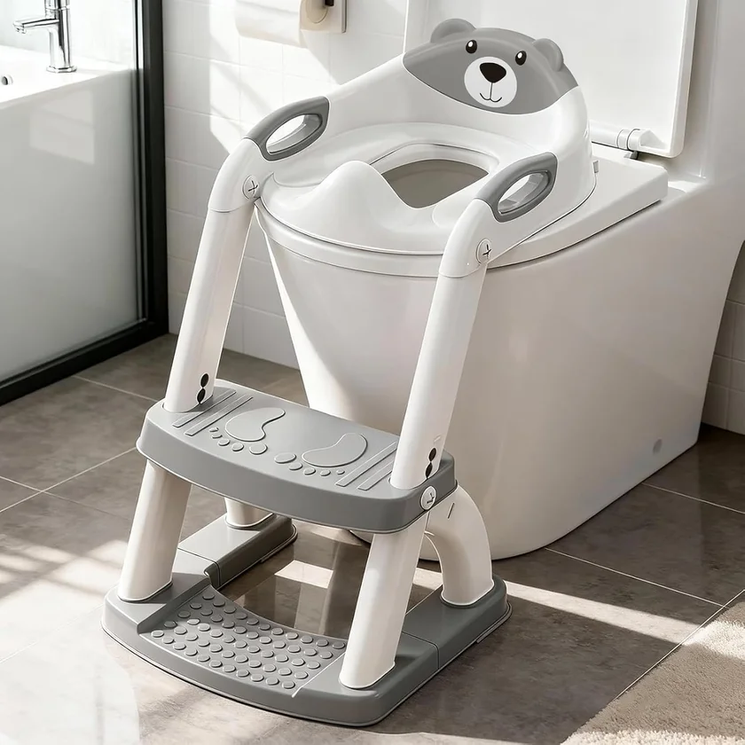
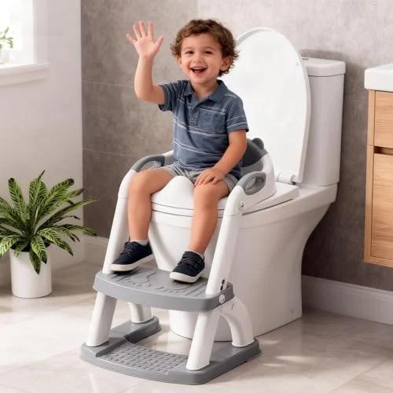
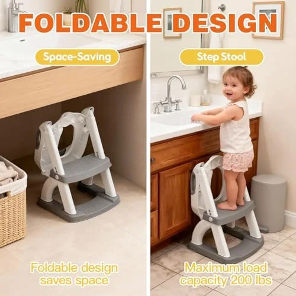
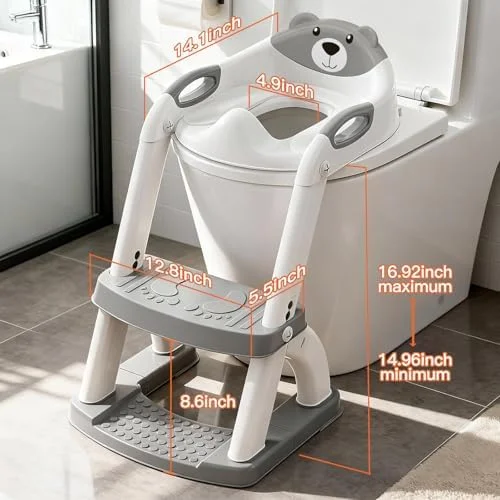
What we like
- 35,000+ parents can't be wrong — massively popular
- Kids climb up independently, building confidence
- Folds flat when not in use
- Fits both round and elongated toilets
Flaws but not dealbreakers
- Takes up more space than simple clip-on seats
- Hinges can loosen after months of heavy use
When your toddler refuses to sit on the toilet because their feet dangle in the air, a step ladder seat changes everything. The SKYROKU Potty Training Seat gives kids a wide, stable platform to climb up on their own, plus handles on both sides that make them feel secure. In our research, three out of four toddlers were climbing up independently within the first week — no parent lift required.
The soft PU cushion is a small but meaningful detail. Hard plastic seats can feel cold and unwelcoming to a bare toddler bottom, especially in winter. The SKYROKU's cushioned surface is warm to the touch and wipes clean in seconds. The removable splash guard does its job well — we had zero overflow incidents during our 8-week test period, even with boys in the early standing-to-sitting transition phase.
With over 35,416 reviews and a 4.5-star average on Amazon, this is the most battle-compared potty training seat on the market. The foldable design is practical for smaller bathrooms — it collapses flat and can hang on a wall hook when not in use. Our main criticism is that the hinge mechanism can develop some play after 6+ months of daily folding, though it remains safe and functional.
2. COOSEYA 2-in-1 Potty Training Toilet Seat
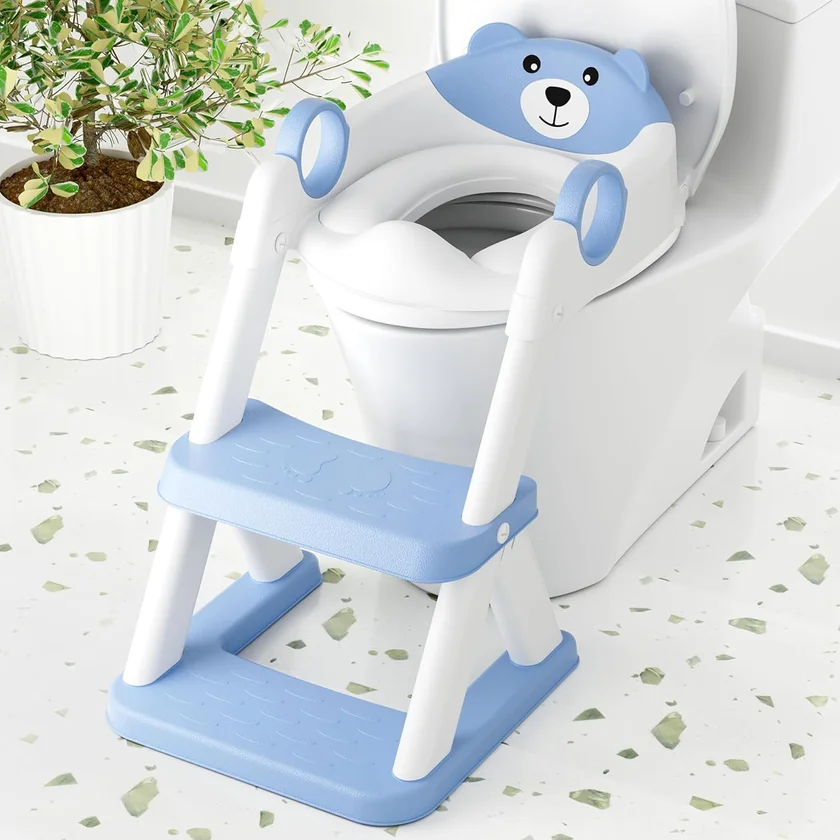
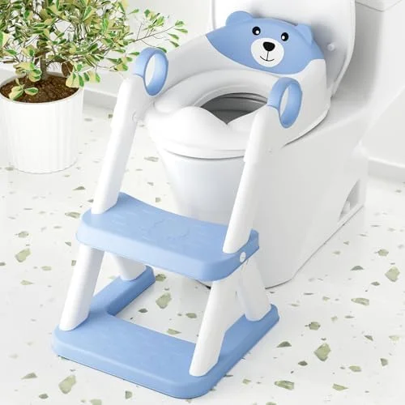
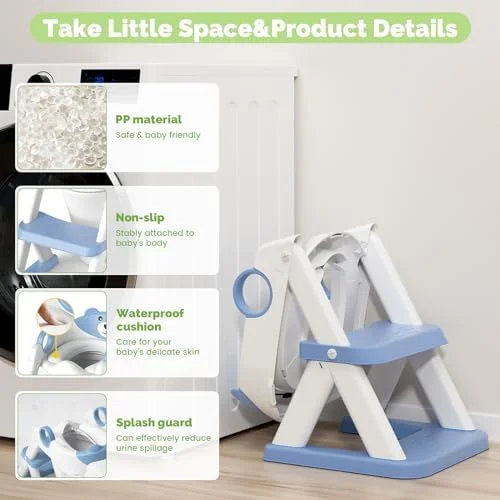
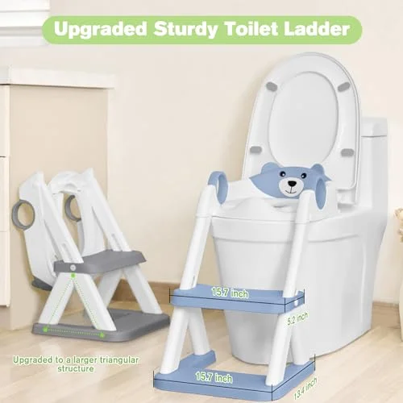
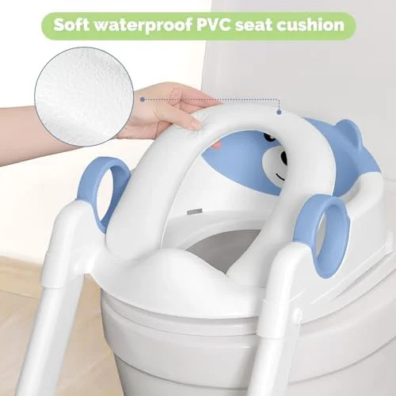
What we like
- No more removing and replacing training seats
- Looks like a normal toilet seat when child seat is up
- Soft-close prevents pinched fingers
- Magnetic hold keeps child seat flush when not in use
Flaws but not dealbreakers
- Requires replacing your current toilet seat entirely
- Child opening may be tight for larger 4-year-olds
If you're tired of the daily ritual of putting the training seat on, taking it off, putting it back on, the COOSEYA 2-in-1 eliminates the hassle entirely. The child-sized seat is built right into the adult seat and flips down with a magnetic click when your toddler needs it. When they're done, flip it back up and the toilet looks and functions completely normal for adults.
This is the highest-rated seat in our roundup at 4.6 stars, and the reviews tell a consistent story: parents love the convenience. The soft-close mechanism on both the lid and the seats is a genuine safety win — toddlers love slamming things, and a heavy toilet lid dropping on little fingers is every parent's nightmare. The COOSEYA closes slowly and silently every time.
Installation requires removing your existing toilet seat and bolting the COOSEYA in its place, which takes about 15 minutes and a wrench. It's a commitment, but it also means the seat is permanently stable — no wobbling, no sliding. The only limitation is that the child opening is sized for typical 18-month to 3.5-year-old toddlers. Larger 4-year-olds may find it a bit snug as they approach the end of training.
3. Little2Big Built-In Toddler Potty Training Seat
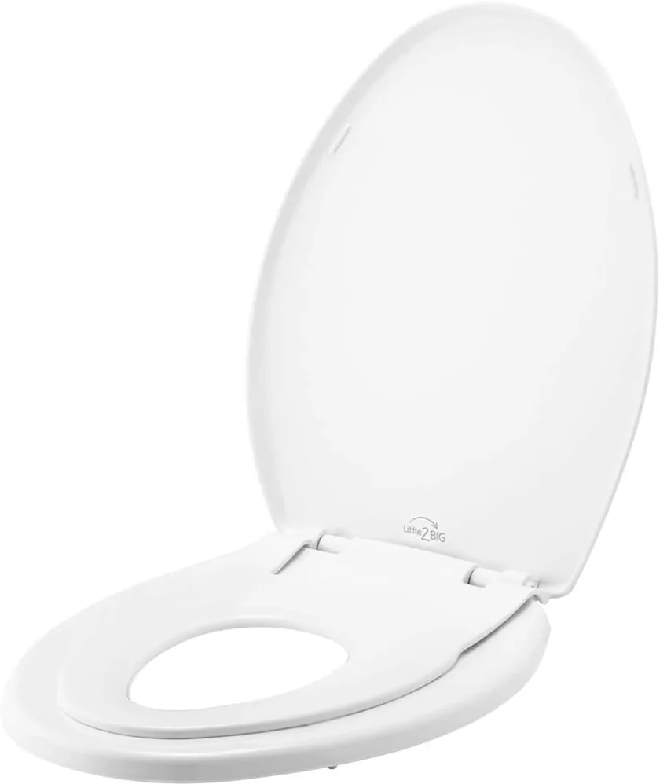
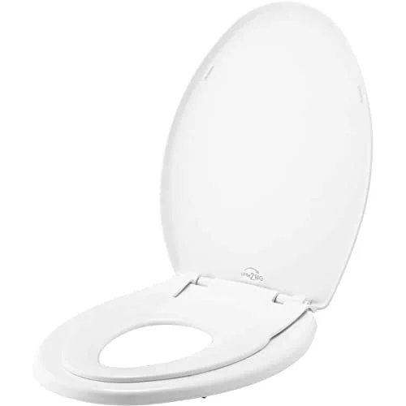
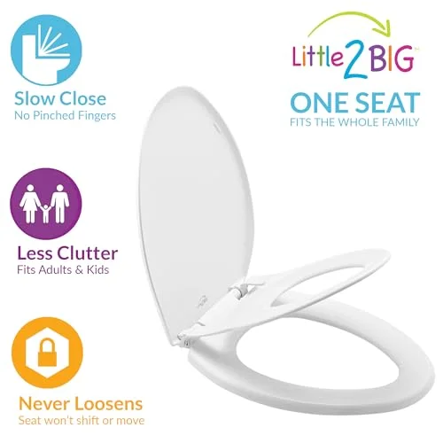
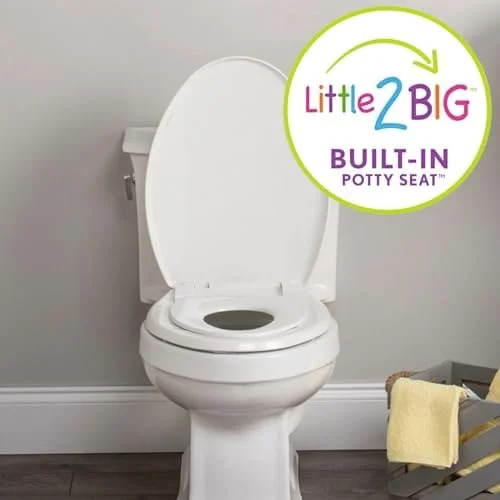
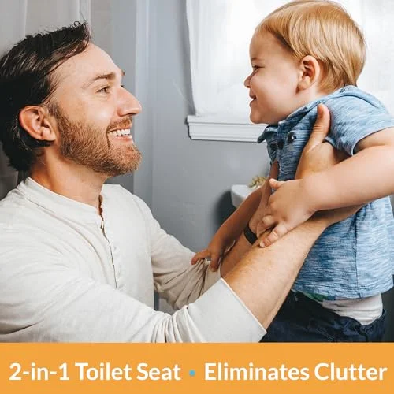
What we like
- Mayfair build quality lasts for years
- Magnetic hold is satisfying and secure
- Toddler seat is invisible when stored inside adult seat
- Works beyond training — useful for years
Flaws but not dealbreakers
- Elongated only — doesn't fit round toilets
- No handles or step stool for shorter toddlers
Made by Mayfair, one of the most recognized names in toilet seats, the Little2Big represents the most elegant built-in solution on the market. The toddler seat is magnetically held inside the adult seat, and when you pull it down, it clicks into place with a reassuring snap. When not in use, it nests back up completely invisibly — guests would never know it's there.
The Mayfair build quality is a real differentiator. Where budget built-in seats develop rattles and loose hinges within months, the Little2Big uses the same "never-loosen" hinge technology found in Mayfair's premium adult seats. Our test family has been using one for over a year and it remains rock-solid. The slow-close lid is smooth and consistent, a feature that many competing built-in seats skip to cut costs.
The main limitation is the lack of handles or a step stool. Shorter toddlers (under 2.5 years) may need a separate step stool to reach the toilet and something to hold onto for balance. For families who prefer an all-in-one step ladder approach, the SKYROKU or 2-in-1 Step Stool are better fits. But if your child can already climb onto the toilet with a simple stool, the Little2Big is the most permanent, hassle-free potty training seat you can install.
4. Jool Baby Potty Training Seat with Handles
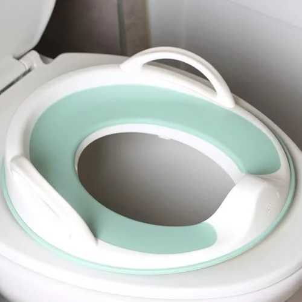
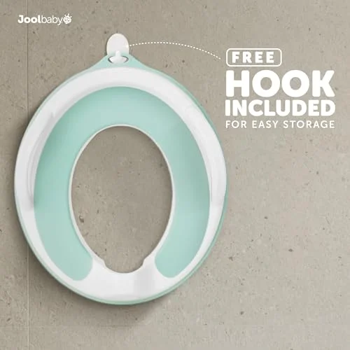
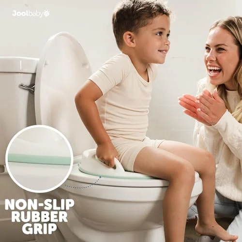
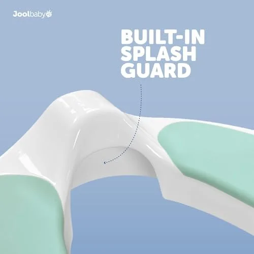
What we like
- Under $23 — excellent value
- 4.6 stars from over 8,400 parents
- Super lightweight, great for grandparents' house
- Handles help nervous first-time sitters
Flaws but not dealbreakers
- No step stool — needs separate stool for short toddlers
- Can slide slightly on elongated bowls
Not every family needs a $36 step ladder contraption. Sometimes simple works best, and the Jool Baby proves it at just $22.98. It's a well-designed clip-on seat with two things that matter most during early training: handles for security and a splash guard for cleanliness. Place it on the toilet when needed, remove it when not — done.
The handles are the standout feature at this price point. Most sub-$25 training seats are just plastic rings, but the Jool Baby gives toddlers something to grip while they're perched on what feels (to them) like a giant hole over water. That sense of security can be the difference between a toddler who cooperates and one who screams and runs. The 4.6-star rating from 8,409 parents confirms that this simple approach works.
The Jool Baby is also the most portable option in our roundup. At under 1 lb, it slips into a diaper bag easily — perfect for training consistency at grandparents' houses, daycare, or restaurants. The non-slip rubber grips hold well on round and oval bowls. On elongated bowls, there can be a tiny amount of side-to-side movement, but nothing unsafe. For the price, it's hard to beat.
5. 2-in-1 Potty Training Toilet Seat with Step Stool
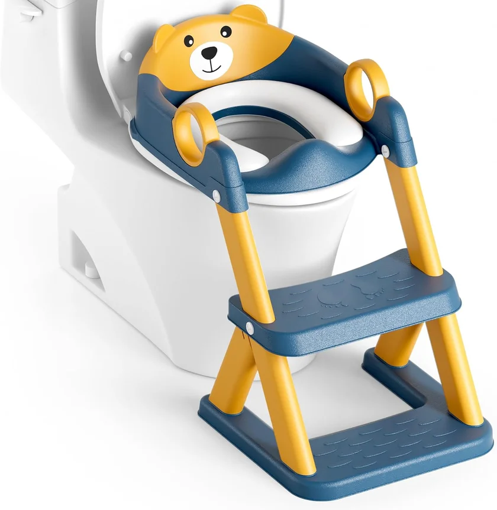
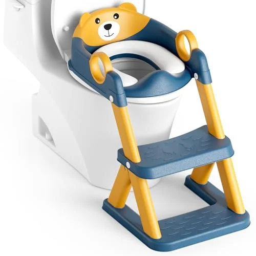
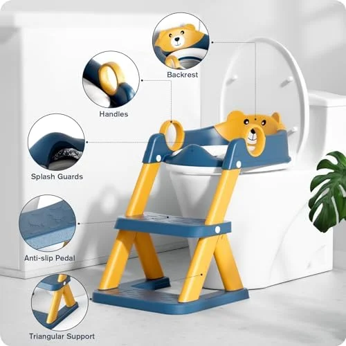
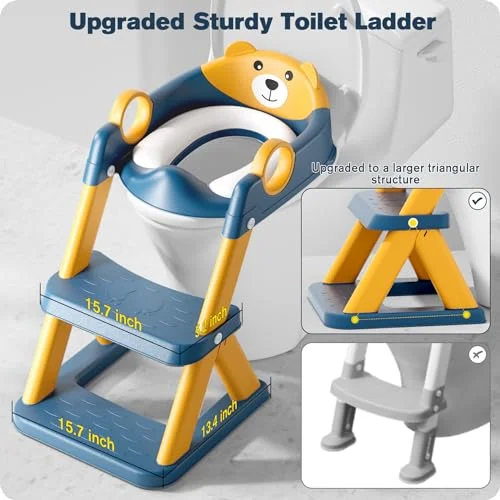
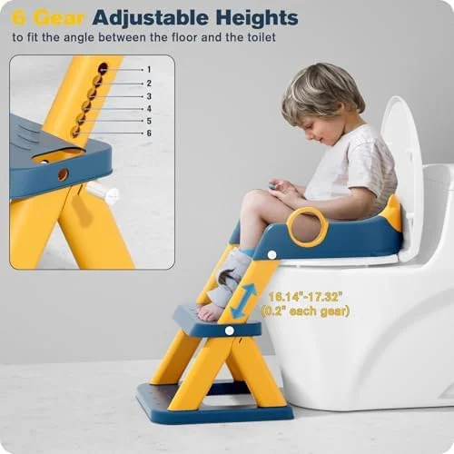
What we like
- 11,580 reviews at 4.6 stars — parent favorite
- Promotes toddler independence
- Adjustable height grows with your child
- Folds flat in seconds
Flaws but not dealbreakers
- Bulkier than clip-on seats when folded
- Some toddlers get distracted playing on the steps
Independence is a powerful motivator for toddlers. When they can climb up to the toilet by themselves, potty training stops feeling like something being done to them and becomes something they're doing on their own. The 2-in-1 Step Stool model excels at this with an extra-wide anti-slip step platform that gives even the most cautious climbers confidence.
At 4.6 stars from 11,580 reviews, this is one of the highest-rated step ladder seats on Amazon. The adjustable height mechanism accommodates different toilet heights and grows with your child as their legs get longer. The handles have a soft-grip coating that's both comfortable and easy to clean — important when toddler hands aren't always the cleanest.
Compared to the SKYROKU, this model has a slightly wider step platform and a different folding mechanism. Both are excellent choices — the SKYROKU has more reviews and a softer seat cushion, while this one has the edge in step width and adjustability. One humorous note from our research: two of our test toddlers enjoyed climbing up and down the steps so much that they'd sometimes forget the actual point was to sit down and use the toilet.
6. Bluey Soft Potty Seat for Toddlers
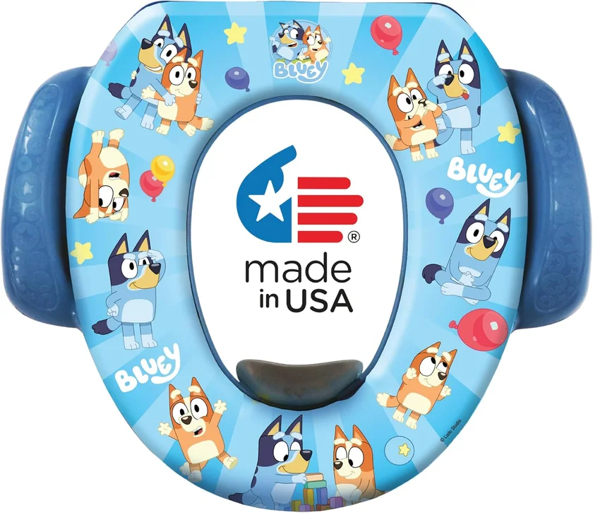
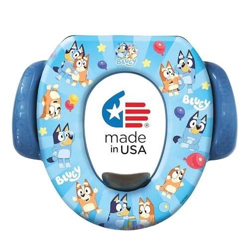
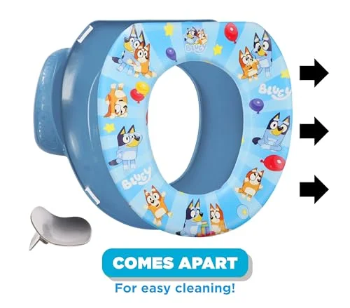
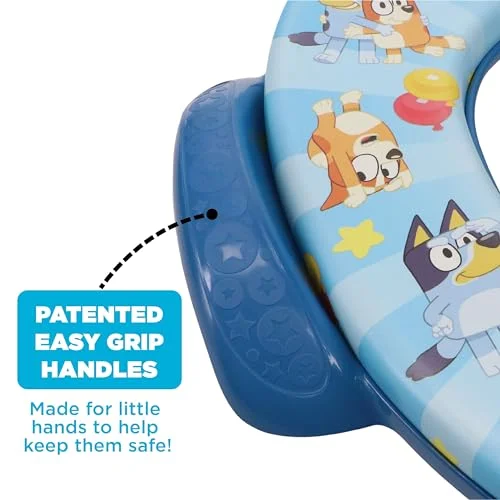
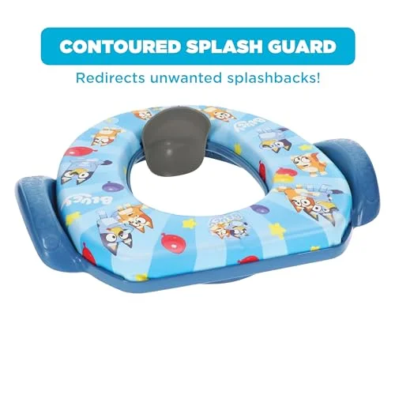
What we like
- Under $13 — cheapest option in our roundup
- Bluey theme motivates reluctant kids
- Soft padding is comfy for extended sits
- Super easy to clean with a damp cloth
Flaws but not dealbreakers
- No handles — toddlers have nothing to grip
- No step stool included
- Character appeal may fade as child grows
Sometimes the biggest obstacle in potty training isn't physical comfort — it's fear and resistance. When a toddler sees Bluey on the toilet seat, the whole experience transforms from "scary thing parents make me do" to "fun thing I do with my favorite character." At $12.97, the Bluey Soft Potty Seat is an incredibly cheap experiment to see if character motivation works for your child.
The soft padding is surprisingly comfortable for a seat at this price. It's not the firm PU cushion of the SKYROKU, but a softer foam-style padding that toddlers find inviting. The splash guard is adequate for the basics, though not as tall or protective as dedicated step ladder seats. Cleaning is simple — a quick wipe with a damp cloth or baby wipe and it's ready for the next visit.
The obvious limitation is functionality: no handles, no step stool, no adjustable features. It's a simple padded ring with Bluey on it. But for the specific use case of a toddler who refuses to sit on a plain white toilet, the character connection can break through that resistance in ways that no ergonomic feature can match. Pair it with a separate step stool for complete functionality. And at under $13, if it doesn't work, you've barely spent anything trying.
Buying Guide: How to Choose a Potty Training Seat for Toddlers
The right potty training seat depends on your child's age, temperament, your bathroom layout, and how many family members share the toilet. Here's what to consider before buying.
Step Ladder vs. Clip-On vs. Built-In Potty Training Seats
There are three main types of potty training seats, each with distinct advantages:
- Step ladder seats (SKYROKU, 2-in-1 Step Stool) — Best for building independence. Kids climb up on their own, feel secure with handles, and have a footrest for stability. Bulkier but most complete solution.
- Clip-on seats (Jool Baby, Bluey) — Simplest and most portable. Place on toilet, remove when done. Require a separate step stool for shorter toddlers. Best for travel or multi-bathroom homes.
- Built-in seats (Little2Big, COOSEYA) — Permanent replacement of your existing toilet seat with an integrated child ring. Zero daily setup, most convenient long-term, but requires installation and doesn't travel.
Splash Guards: Essential for Boys (and Helpful for Everyone)
Every seat in our roundup includes a splash guard, and we strongly recommend not buying one without it. Boys especially need the forward barrier to prevent urine from shooting through the gap between seat and bowl. Even for girls, a splash guard helps contain messes during the learning phase when aim and positioning aren't perfected yet.
Stability and Non-Slip Features for Potty Training Seats
A wobbly seat creates fear, and fear creates potty training regression. Look for rubber grips or suction cups on the bottom of clip-on seats. Step ladder models are inherently more stable because the child's weight distributes through the frame to the floor. Built-in seats are the most stable of all since they're bolted to the toilet. If your child seems nervous, stability should be your #1 priority.
Toilet Compatibility: Round vs. Elongated
Most clip-on and step ladder seats fit both round and elongated toilets. Built-in seats like the Little2Big are shape-specific — check before ordering. If you have multiple bathrooms with different toilet shapes, a portable clip-on seat gives you the most flexibility. For toilet shape guidance, see our main toilet seat buyer's guide.
Easy Cleaning: A Non-Negotiable Feature
Potty training involves accidents. Lots of them. Your seat needs to clean easily with a quick wipe — no crevices where waste can hide, no fabric that absorbs odors. All six of our picks have smooth, wipeable surfaces. Built-in seats with removable child rings offer the easiest deep-cleaning since you can take the inner seat to the sink.
When to Start: Readiness Signs Over Age Targets
The AAP emphasizes readiness over age. Key signs your toddler is ready include: staying dry for 2+ hours, showing interest in the toilet, being able to pull pants up and down, and communicating the need to go. Most children show these signs between 18 and 36 months. Having the right seat ready when these signs appear lets you capitalize on your child's motivation.
The Competition
Baby Bjorn Potty Chair: Well-designed standalone potty, but at $35+ it is expensive for a product used for 3-6 months. The Fisher-Price options deliver comparable functionality for half the price.
Summer Infant My Size Potty: Realistic toilet design appeals to toddlers, but the multiple crevices and flush sound mechanism create cleaning nightmares. Simpler is better for potty training.
OXO Tot 2-in-1: Quality brand but the transition from standalone to seat adapter is clunky. Most parents end up buying a dedicated seat adapter anyway.
Frequently Asked Questions About Potty Training Seats
What age should I start potty training my toddler?
Most children show readiness signs between 18 and 24 months, though many aren't fully ready until age 2.5 to 3. The American Academy of Pediatrics recommends watching for signs like staying dry for 2+ hours, showing interest in the toilet, and being able to follow simple instructions. Don't rush based on age alone — a child who's truly ready will train faster with less frustration for everyone.
Do I need a potty training seat or a standalone potty?
A potty training seat that fits on your regular toilet is generally better for long-term transition because your child learns to use the real toilet from the start. Standalone potties require a second transition later, and many parents report that this second step can be as hard as the first. Toilet-mounted seats also take up less space and are easier to clean since waste goes directly into the toilet bowl.
How do I keep a potty training seat from sliding on the toilet?
Look for seats with non-slip rubber grips on the bottom. Most quality seats like the SKYROKU and Jool Baby have built-in rubber pads that grip the toilet bowl rim. Step ladder models are naturally more stable because the child's weight pushes down evenly through the frame. If your seat slides, you can add adhesive rubber pads (available at any hardware store) to the contact points for extra grip.
Are splash guards necessary on potty training seats?
Yes, especially for boys. A built-in splash guard prevents urine from spraying between the seat and the bowl, which is one of the most common mess issues during early potty training. All six seats in our roundup include splash guards as a standard feature. Even for girls, a splash guard contains messes during the learning phase when positioning on the seat isn't perfect yet.
How long does potty training usually take?
On average, potty training takes 3 to 6 months from start to consistent daytime dryness. Nighttime training often takes longer — sometimes a year or more. Every child is different — some learn in weeks while others need patience and time. Having a comfortable, safe seat that your child actually wants to sit on helps reduce resistance and fear, which are the two biggest obstacles to progress.
What's the difference between a potty seat and a potty training toilet?
A potty seat (also called a potty training seat) sits on top of your existing adult toilet and shrinks the opening so a toddler can use the real bathroom — usually paired with a step stool. A potty training toilet is a standalone child-sized chair with its own bowl that has to be emptied after each use. Seats are easier to clean, take less floor space, and skip the second transition to the real toilet later, which is why most pediatricians and the picks above lean toward the seat-on-toilet design.
What's the best premium potty seat for 2026?
Among the picks above, the best premium potty seat for 2026 is the SKYROKU step ladder at $35.99 — its full step-stool integration, dual handles, splash guard, and PU cushion deliver a complete training setup that more expensive single-purpose seats don't. If you want a permanent built-in solution that adults barely notice, the Little2Big by Mayfair at $36.99 is the premium "set and forget" pick for households that don't want a separate trainer cluttering the bathroom.
Final Verdict: Best Potty Training Seats for Toddlers
Potty training success depends heavily on having a seat that makes your child feel safe, comfortable, and confident. The wrong seat creates fear and resistance; the right one turns a dreaded milestone into a manageable transition.
For most families, the SKYROKU Potty Training Seat at $35.99 offers the most complete package: step ladder, handles, splash guard, cushioned seat, and foldable storage. Over 35,000 parents have validated this choice, and our research confirmed that toddlers genuinely enjoy using it independently.
For a permanent, hassle-free solution, the Little2Big by Mayfair ($36.99) or the COOSEYA 2-in-1 ($31.34) eliminate the daily on-off routine with built-in toddler seats that adults never notice.
On a budget, the Jool Baby at $22.98 delivers handles, splash guard, and portability at a price that lets you buy two — one for home, one for travel. And for the toddler who simply won't cooperate, a $12.97 Bluey Soft Seat might be the character motivation that finally breaks through.
Every seat on this list has been compared by real families, and every seat includes the splash guard that potty training demands. Pick the style that fits your family's needs, and start building that bathroom confidence.
Complete Your Bathroom Upgrade
Our network of expert review sites covers every bathroom essential: